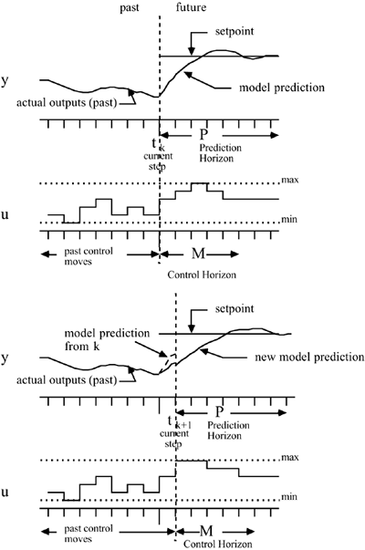

| [ Team LiB ] |
|
16.1 MotivationMost of the techniques presented in this textbook have been based on continuous-time models. The controllers are normally implemented by microprocessors and, therefore, must be converted to discrete time before implementation. We have focused on continuous time because few changes in the techniques are needed for the discrete-time case. One advanced control technique that has solely had discrete-time application is model predictive control (MPC). MPC is by far the most commonly applied advanced control technique in the chemical process industry, so it is worth devoting a chapter to it. One major contributor to the success of MPC is the ability to handle constraints in an optimal fashion. The optimization-based procedure is intuitive and is also a natural way of handling multivariable systems. Basic DescriptionThe basic idea behind MPC is shown in Figure 16-1. At each time step, k, an optimization problem is solved, as illustrated on the top half of the figure. An objective function (usually quadratic) based on output predictions over a prediction horizon of P time steps is minimized by a selection of manipulated variable moves over a control horizon of M control moves. Although M moves are optimized, only the first move is implemented. After uk is implemented, the measurement at the next time step, yk+1 is obtained, as shown in the bottom half of the figure. A correction for model error is performed, since the measured output yk+1 will, in general, not be equal to the model predicted value. A new optimization problem is then solved, again, over a prediction horizon of P steps by adjusting M control moves. This approach is also known as receding horizon control. Figure 16-1. Basic concept of MPC. For clarity, we initially focus on unconstrained SISO systems. Several questions naturally arise. What type of objective function should be used for optimization? What type of model should be used to predict the output? How should the model be initialized to predict the future output values? What is the desired setpoint trajectory? How should constraints be implemented? Some of these topics are discussed in the next section. |
| [ Team LiB ] |
|